Tierra de historia, selva y mar. Libre, soberana e independiente.
Cultura, Patrimonio y Gastronomía
Identidad hondureña: historia, pueblos vivos y sabores.
1. Historia y pensamiento unionista de Francisco Morazán
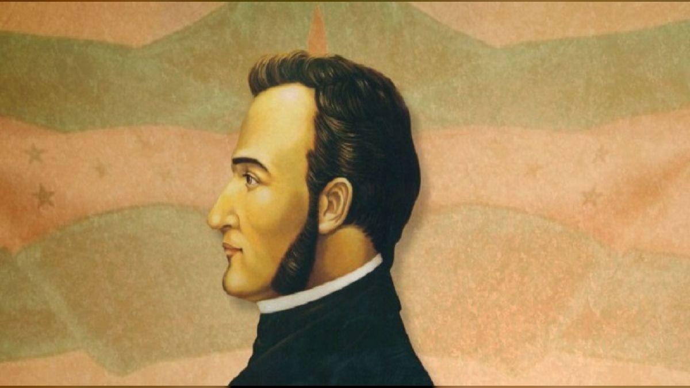
Francisco Morazán fue uno de los personajes más importantes de la historia de Honduras y Centroamérica.
Nació el 3 de octubre de 1792 en Tegucigalpa y destacó como militar, político y defensor de la unión
centroamericana. Su pensamiento unionista buscaba reunir a los países de Centroamérica en una sola nación,
con el propósito de fortalecer su independencia, promover la educación y establecer instituciones basadas en
los ideales republicanos.
Morazán llegó a ser presidente de la República Federal de Centroamérica y dedicó gran parte de su vida a
defender la unión de los pueblos centroamericanos. Su legado continúa siendo un símbolo de libertad, educación,
justicia e integración regional.
Entre los próceres y figuras históricas vinculadas con la independencia y la formación de Honduras destacan
José Cecilio del Valle: intelectual y político relacionado con la redacción del Acta de Independencia de Centroamérica de 1821.
Dionisio de Herrera: primer jefe de Estado de Honduras y figura importante en la organización política del país.
José Trinidad Cabañas: militar y presidente hondureño que defendió ideales liberales y la unión centroamericana.
José Trinidad Reyes: sacerdote y educador, fundador de la institución que dio origen a la Universidad Nacional Autónoma de Honduras.
Francisco Morazán: defensor de la unidad centroamericana y de los ideales republicanos.
2. Etnias vivas y diversidad cultural
Honduras es un país multicultural y plurilingüe, cuya identidad se ha formado mediante la convivencia de diferentes
pueblos, tradiciones, lenguas, conocimientos ancestrales y expresiones artísticas. Cada comunidad contribuye a conservar
la historia y la diversidad cultural de la nación.
Pueblo Lenca
Es uno de los pueblos indígenas más representativos de Honduras. Se distingue por su tradición agrícola, alfarería, elaboración de textiles, gastronomía y celebraciones comunitarias. Sus conocimientos ancestrales forman parte importante del patrimonio hondureño.
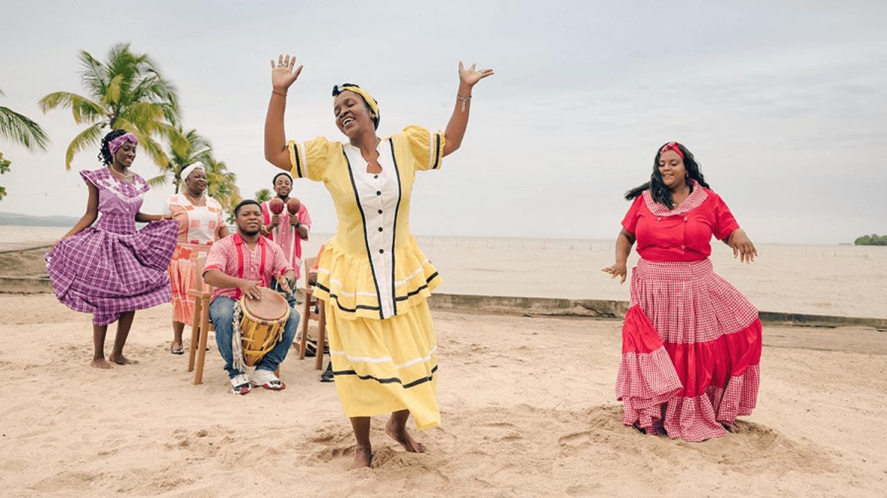
Pueblo Garífuna
Posee una identidad afroindígena caracterizada por su lengua, música, danza y tradiciones orales. La punta, los tambores y la gastronomía a base de coco, pescado y plátano son expresiones representativas de su cultura, especialmente en las comunidades costeras.
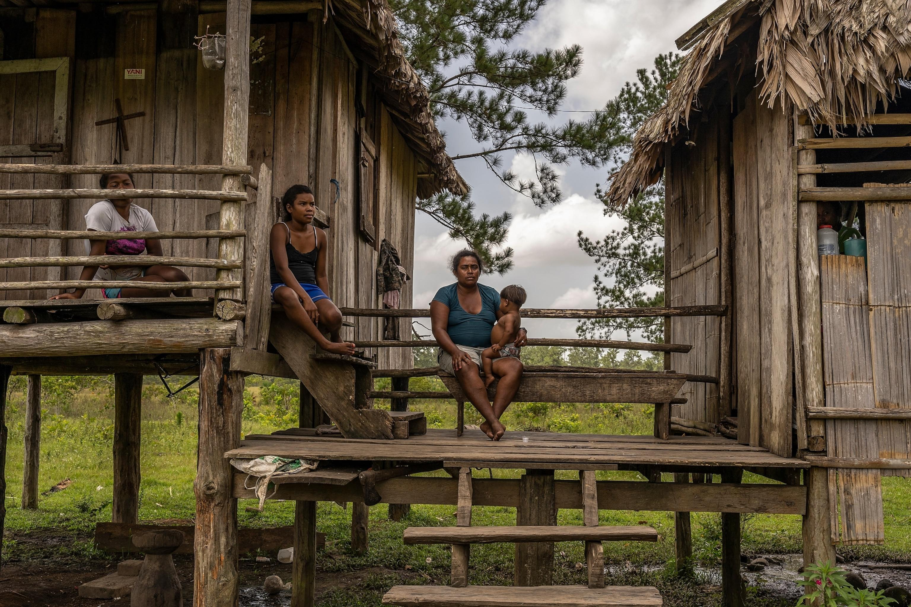
Pueblo Misquito o Miskito
Habita principalmente en la región de La Mosquitia, en el oriente del país. Sus tradiciones están relacionadas con la pesca, la navegación, la agricultura y el aprovechamiento sostenible de los recursos naturales. Su lengua y sus conocimientos comunitarios son parte de su identidad.
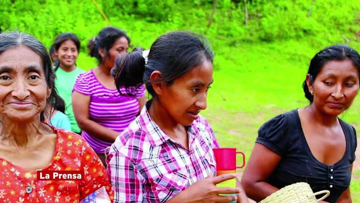
Pueblo Tolupán
Conserva tradiciones ancestrales y una estrecha relación con los bosques y las montañas. Sus comunidades mantienen prácticas agrícolas, conocimientos sobre plantas y formas propias de organización social que contribuyen a la diversidad cultural del país.
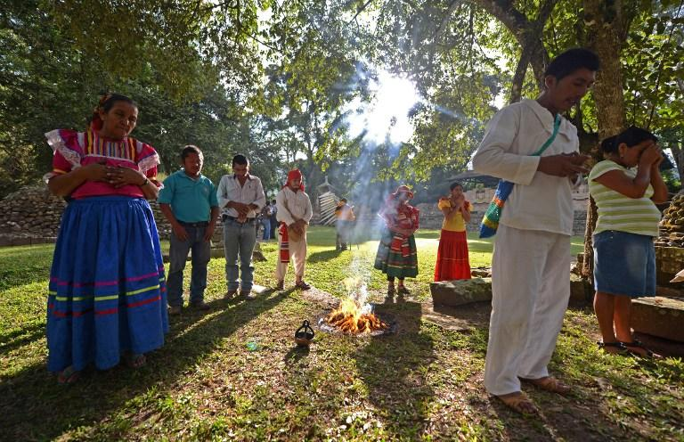
Pueblo Maya Chortí
Está vinculado con el legado de la civilización maya en el occidente de Honduras. Sus tradiciones incluyen la agricultura, los conocimientos ancestrales, las prácticas comunitarias y la conservación de su identidad cultural, estrechamente relacionada con el patrimonio arqueológico de Copán.
3. Catálogo visual de la gastronomía típica hondureña
La gastronomía de Honduras refleja la mezcla de tradiciones indígenas, españolas y afrodescendientes.
Ingredientes como el maíz, los frijoles, el plátano, el coco, el pescado y el café forman parte de
numerosas recetas que representan la identidad de las distintas regiones del país.
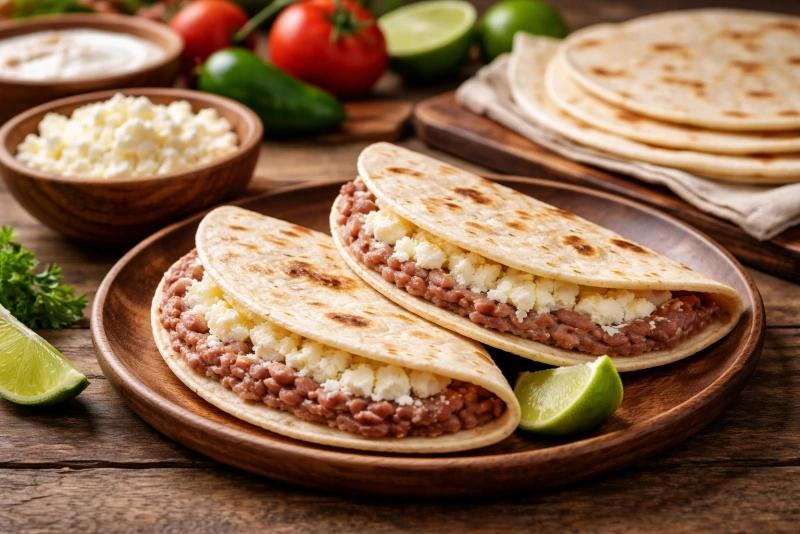
Baleadas tradicionales
Son uno de los platillos más conocidos de Honduras. Se preparan con una tortilla de harina de trigo rellena de frijoles fritos, mantequilla y queso rallado. También pueden llevar huevo, aguacate, carne o chorizo. Son habituales en desayunos y cenas.
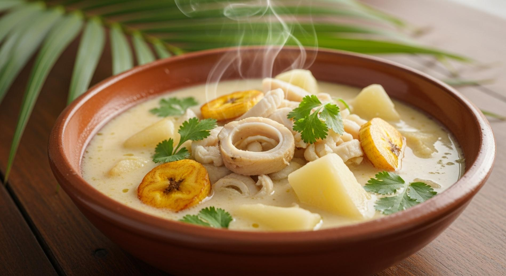
Sopa de caracol
Es una preparación tradicional elaborada con caracol, leche de coco, yuca, plátano y especias. Su sabor combina ingredientes marinos con productos tropicales y está relacionado con las tradiciones culinarias de la costa caribeña hondureña.
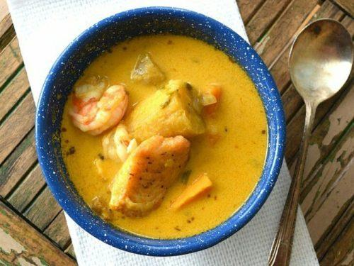
Tapado garífuna
Es un plato tradicional preparado con pescado o diferentes mariscos, leche de coco, plátano y otros tubérculos. Representa la relación del pueblo garífuna con el mar y la conservación de sus conocimientos gastronómicos ancestrales.
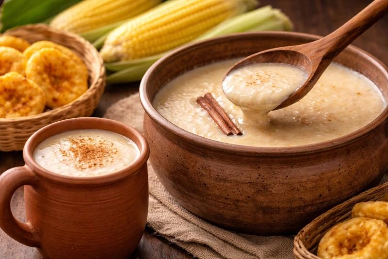
Atol de elote
Es una bebida espesa y dulce elaborada con maíz tierno, leche o agua y azúcar, según la receta. Se consume caliente y forma parte de las tradiciones familiares y comunitarias relacionadas con el cultivo del maíz.
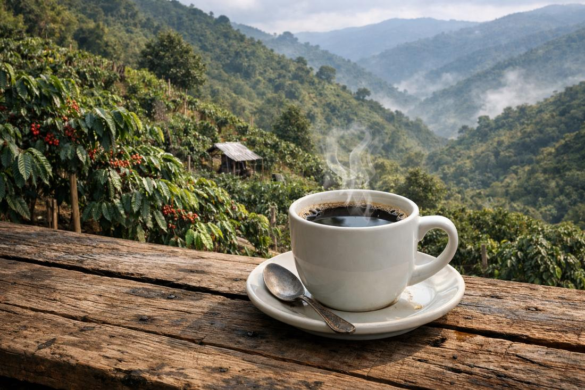
Café hondureño de altura
Honduras destaca por su producción de café cultivado en regiones montañosas. Sus características de aroma, acidez y sabor varían según la altura, la variedad y el proceso de producción. El café es uno de los productos agrícolas más representativos del país.
4. Patrimonio cultural y tradiciones de Honduras
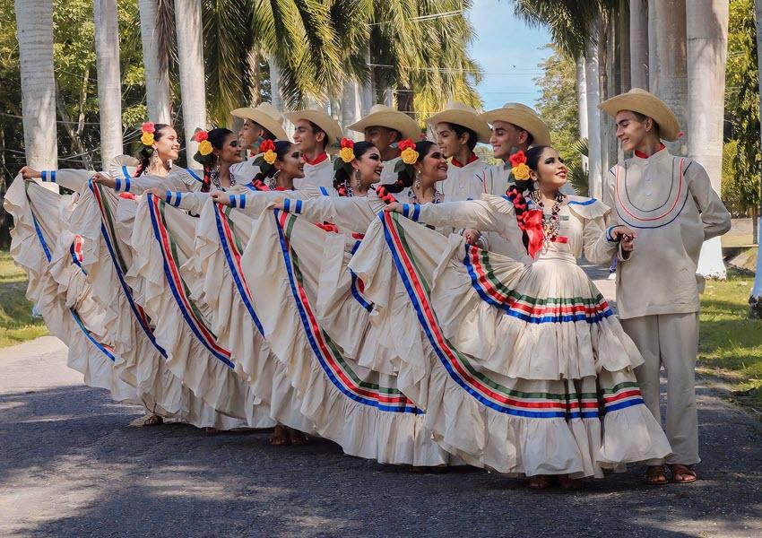
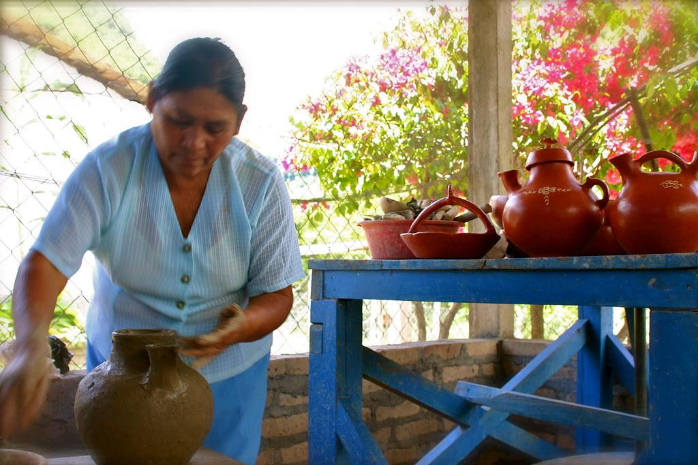
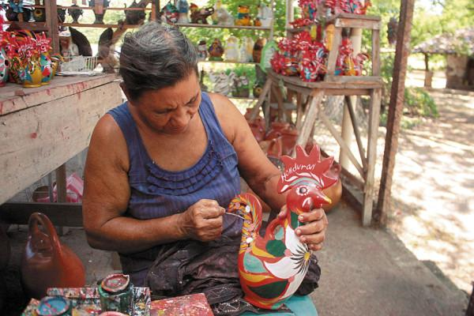
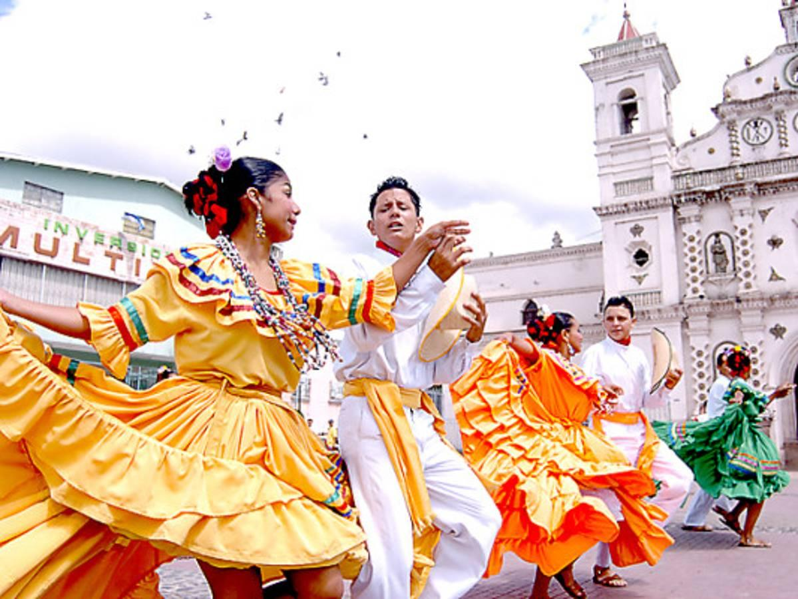
El patrimonio hondureño comprende tanto monumentos históricos y sitios arqueológicos como tradiciones,
música, danzas, artesanías, relatos y conocimientos transmitidos entre generaciones. Las ruinas de Copán,
las iglesias coloniales, la música garífuna y la alfarería lenca son ejemplos de expresiones que contribuyen
a conservar la memoria histórica y cultural del país.
Preservar este patrimonio permite fortalecer la identidad nacional, fomentar el respeto por la diversidad y
promover un turismo responsable que beneficie a las comunidades locales.